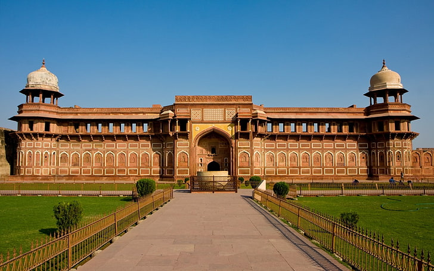
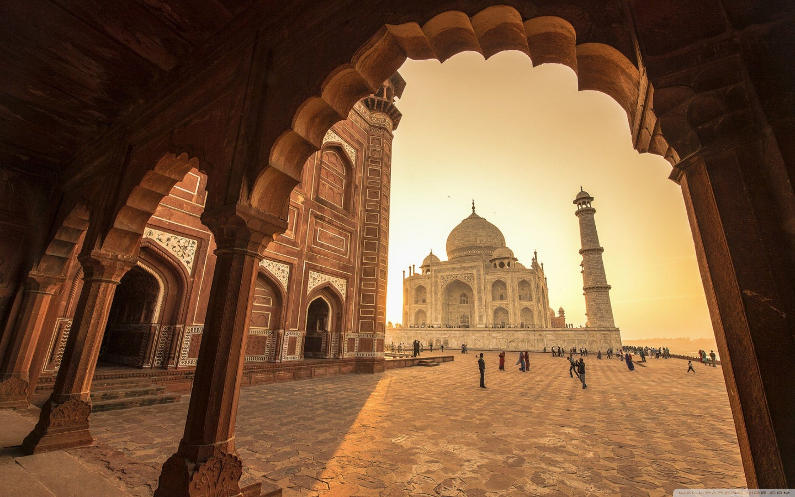
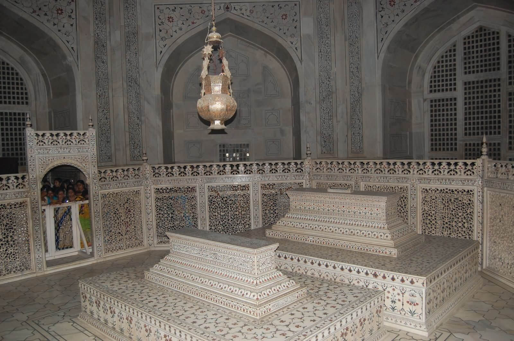

Taj Mahal
The Taj Mahal is one of the most famous monuments in the world and a symbol of love. It is located in Agra, India, and attracts millions of visitors every year. The monument is known for its beautiful white marble architecture and stunning design.
History
The Taj Mahal was built by the Mughal emperor Shah Jahan in memory of his wife Mumtaz Mahal. Construction began in 1632 and took many years to complete. Today it is considered one of the greatest architectural achievements in history.
Architecture
The Taj Mahal is made of white marble and decorated with beautiful carvings, gardens, and water channels. The monument combines Persian, Islamic, and Indian architectural styles.
Tourism
The Taj Mahal is one of the most visited tourist attractions in India. Visitors come from all around the world to see its beauty, especially during sunrise and sunset.
Famous Features
Some highlights of the Taj Mahal include the main marble mausoleum, reflecting pools, large gardens, and four beautiful minarets surrounding the structure.
Gallery






Taj Mahal
| Location | Agra, India |
| Built By | Shah Jahan |
| Construction | 1632 - 1653 |
| Type | Mausoleum |
| Material | White Marble |
| Famous For | Symbol of Love |